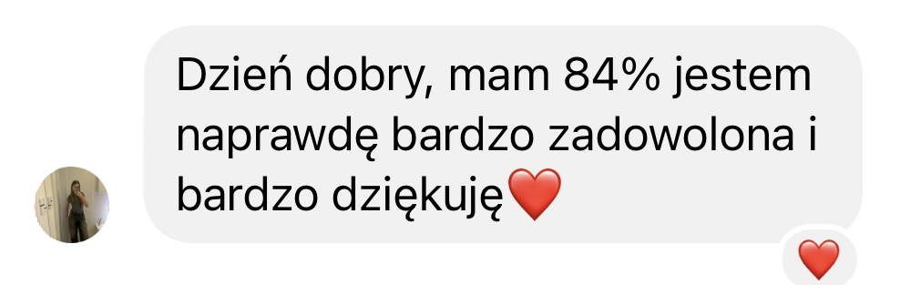
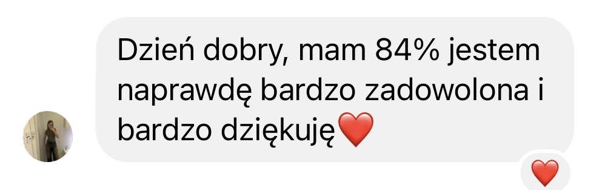

DLA KOGO SPRAWDZI SIĘ
NAJLEPIEJ?
Nie wiesz, od czego zacząć przygotowania do matury?
Ilość materiału i zagadnień maturalnych jest dla Ciebie przytłaczająca, że trudno Ci określić od czego zacząć.
Czujesz, że mimo kilku lat w szkole nie umiesz wiele?
Po latach nauki wciąż masz wrażenie, że Twoja wiedza jest niewystarczająca żeby poradzić sobie na maturze.
Boisz się, że nie opanujesz całego materiału?
W szkole tempo nauki często jest zbyt szybkie, nie zdążysz zrozumieć jednego tematu, a nauczyciel leci z kolejnym.
Patrzysz na maturalne zadania i nie wiesz, jak je rozwiązać?
Zadania maturalne mogą wyglądać na skomplikowane, zwłaszcza jeśli nie poznasz wszystkich typów zadań z każdego działu.
Jesteś w odpowiednim miejscu w odpowiednim momencie, bo wiesz, że...
- Boisz się, że nie ogarniesz wszystkich ważnych zagadnień do czasu matury?
- Czujesz stres i presję, bo nauczyciele w szkole tylko straszą nadchodzącym egzaminem?
- Boisz się, że zobaczysz zadanie na maturze i wszystko wyleci Ci z głowy?
Prawda jest taka, że...
Podstawa programowa zmieniła się
Wiele osób ma poważne problemy, aby zdać podstawową maturę z matematyki z najlepszym dla siebie wynikiem
Opracowałam przejrzysty i łatwy do wdrożenia KROK PO KROKU plan nauki, który działa niezależnie od szkoły w jakiej się uczysz.


 

Ten plan pomógł moim uczniom osiągnąć satysfakcjonujące wyniki z egzaminów
Teraz chcę przekazać mój plan w Twoje ręce i osobiście pomóc Ci w procesie nauki, więc stworzyłam...
Matma Express
Sprawdzony system, który zabierze cię od słabych wyników do satysfakcjonujących wyników z matematyki.
Plan programu
- Liczby rzeczywiste cz. 1
- Liczby rzeczywiste cz. 2
- Równania, nierówności i układy równań
- Funkcje
- Ciągi
- Trygonometria
- Planimetria
- Geometria analityczna
- Stereometria
- Kombinatoryka i rachunek prawdopodobieństwa
- Optymalizacja i rachunek różniczkowy
CO OBEJMUJE PROGRAM?
25 Maturalnych Webinarów “Musisz to umieć” (25x60 min)
Zbudujesz solidne podstawy teoretyczne, które nie tylko wzmocnią Twoje zrozumienie kluczowych zagadnień, ale także przygotują Cię do zastosowania tej wiedzy w praktyce, co zwiększy Twoją pewność siebie i skuteczność na egzaminie.
25 Zajęć Q&A “Pytaj, o co chcesz” (25x60 min)
Zyskasz możliwość rozwiania wszelkich wątpliwości i głębszego zrozumienia trudnych tematów, co pozwoli Ci pewniej podejść do zadań na egzaminie, a także uzyskasz cenne wskazówki od eksperta, które przyspieszą Twój postęp.
6 Zajęć Powtórkowych “Trening Maturalny” (6x60 min)
Regularne powtórki pomogą Ci utrwalić materiał, zrozumieć wzajemne powiązania między działami oraz przygotować się na niespodzianki, co zapewni Ci większą pewność i spokój na egzaminie.
„Ekspresowa Powtórka Maturalna LAST MINUTE: 4h Kluczowych Zagadnień”
Skupisz się na najważniejszych zagadnieniach, które z dużym prawdopodobieństwem pojawią się na egzaminie, co pozwoli Ci wejść na maturę z pełnym przygotowaniem, bez stresu i z jasno określoną strategią.
Encyklopedia Najważniejszych Zadań & Rozwiązań:
To zbiór kluczowych zadań maturalnych, który pomoże Ci opanować najtrudniejsze zagadnienia, zrozumieć metody rozwiązywania problemów, i przygotować się na każde wyzwanie egzaminacyjne, co zapewni Ci pewność siebie i maksymalne wyniki na maturze.
BONUS 2: Listę maturalnych przydatnych wzorów, których nie ma w karcie wzorów
Otrzymasz listę maturalnych bardzo przydatnych wzorów, których nie znajdziesz w maturalnych kartach CKE, dzięki znajomości tych wzorów z łatwością rozwiążesz zadania i zdobedziesz dodatkowe punkty na maturze.
BONUS 3: Dostęp do Grupy Członkowskiej MatChem University
Dostęp do społeczności tylko dla członków, gdzie uczniowie maja STAŁY KONTAKT z Mrs MatChem, mogą zadawać pytania i prosić o rozwiązanie niezrozumiałych zagadnień i zadań kiedykolwiek tego potrzebują, nie muszą czekać do kolejnych zajęć aby skontaktować się z nauczycielem. Na grupie można nawiązać nowe przyjaźnie w świecie ambitnych uczniów.
BONUS 4: Zestaw zadań „Pewniaki maturalne”
Zestaw zadań tzw. „Pewniaki maturalne”, dzięki zestawowi tych zadań wyćwiczysz powtarzające się schematy zadań, które występują od lat na maturze, tak więc zdobędziesz łatwe punkty.
BONUS 5: Workbook maturalny „100 zadań bez których nie radzę iść na maturę”
Maturalny Workbook w którym znajduje się 100 najważniejszych maturalnych zadań, to najlepsza forma powtórki przed samą maturą.
BONUS 6: 2 autorskie arkusze maturalne
2 autorskie arkusze maturalne, dzięki którym sprawdzisz się tuż przed oficjalnym egzaminem maturalnym, a jak wiadomo trening czyni mistrza.

Mrs MatChem
Posiadam 7 letnie doświadczenie w nauczaniu matematyki i chemii.
We współpracy z marką Maturalni przeprowadzałam powtórki maturalne na skalę ogólnopolską pomagając w przygotowaniach uczniom z całej Polski.
Zdawalność moich uczniów na egzaminie maturalnym to 98%.
TWOJE WYNIKI PO PROGRAMIE

UWAGA!
Dzisiaj masz wyjątkową możliwość, aby skorzystać z tej oferty w NAJNIŻSZEJ cenie! Nie przegap!

Polecam w 100%. Nie zastanawiajcie się ani chwili czy warto skorzystać z korepetycji u Pani Kingi. Po 13-stu latach podeszłam do matury i zdałam dzięki jej talentowi do nauczania.